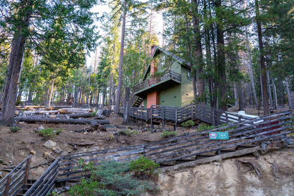
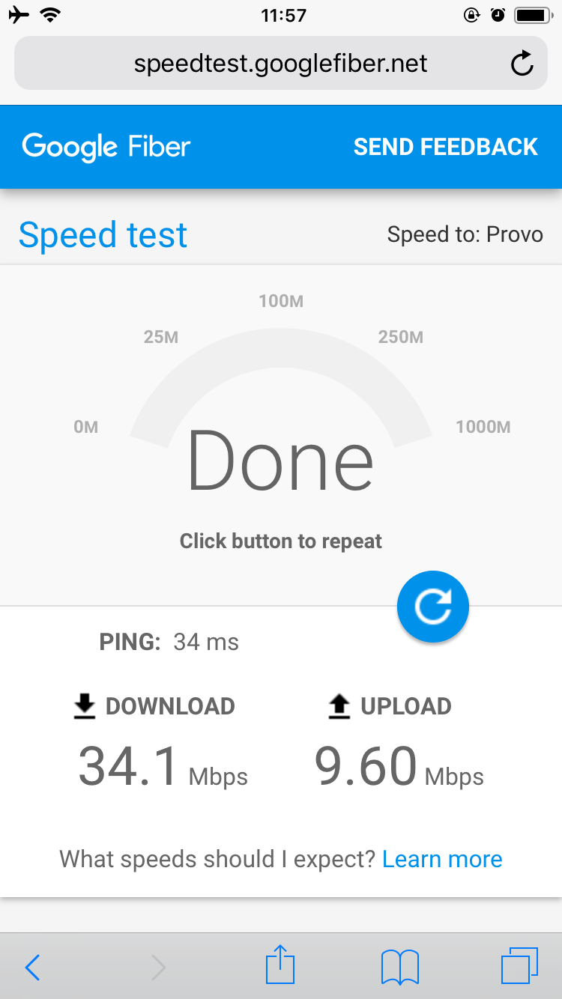
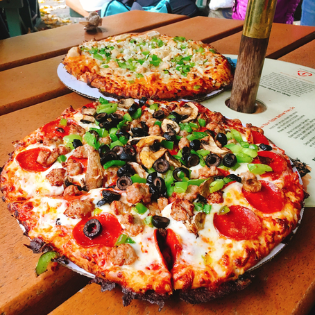
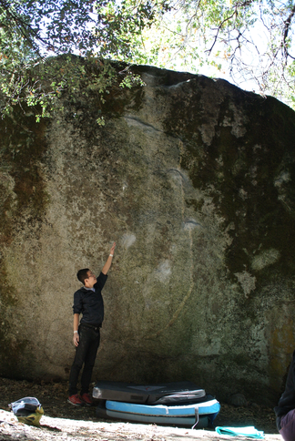
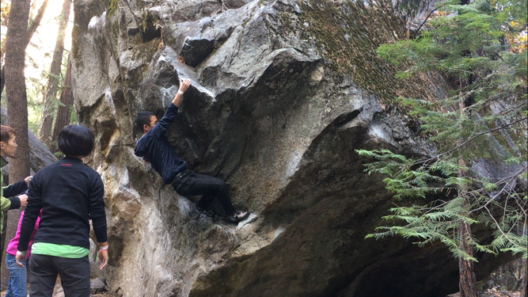

ヨセミテツアー日記
去る10/19〜26日にアメリカのヨセミテにクライミング旅行に行ってきた。 また行くことになったときの自分用のメモとして記録して起きたいと思う。
https://twitter.com/kashew_nuts/status/1053747499951771648
スケジュール感
書き出すときりがないのでざっくりと書くとこんな感じ。
10/19[Day0]: 移動
10/20-25[Day1-5]: クライミング
10/26[Day6]: 移動
初日と最終日の移動は本当に疲れたので、次回いくとしたらフレズノから行きたい…. 成田→サンフランシスコの直行便でいったが、渋滞にハマったおかげで初日宿についたのは0時を回ってた。
「レスト日どうする？」なんて会話もしていたけど、結局ヨセミテにいた5日中5日とも登ってた。 明確なレスト日はなかったけど毎日12-18時間ぐらいずつレストしてたのと、ワクワク感が尽きなくて今回は必要なかった。 だいたい10-12時から18時ぐらいしかエリアにいなかったり、移動も車で数十分かかることもあり登ってる時間もそこまで多くなかったのかな。
V7, V8以上の課題を完登しようと思ったら、 2週間ぐらいまとめていかないと足りない と感じた。
宿とか食事とか

今回止まったのはCamp4…じゃなくてヨセミテ園内にあるロッジ。 Airbnbで宿を取った。通信網は事前情報から諦めていたのでそれ以外の洗濯機や乾燥機、暖房もあるしすごいなーと思っていたら階段がヤバかった。
食事はDay0の行きがけに1週間分の食料を買ってから行ったのだけど、0時過ぎに着いて水やスーツケース、食べ物類を抱えて何往復もした。 「他の宿より安いのはこれが理由か….」とメンバー全員が思ったとか。
自炊力の高いメンバーが居てくれたおかげで食事に苦労することはなかった。感謝しかない。
移動とか
レンタカーを2台体制で行きました。自分が運転の経験値が浅いこともあり、ほとんどお任せする形になってしまったが、 ヨセミテ園内で海外で運転する実績は解除できた 。
日本から海外にいって運転するときは国際運転免許証が必要らしいのだが、今回はレンタカー会社がやっていた運転免許証翻訳フォームから発行できたのでそちらを使用した。必要な条件は満たしている上に、発行の手間も非常に少なかったので便利。
持ち物
宿に洗濯機があるのがわかっていたので服とかも3,4日分の荷物でいったけど十分足りた。
航空会社にANAを使ったので手荷物1つと預け荷物2つを持っていけた。
今回は手荷物をノースフェースのフューズボックスにして、預け荷物をスーツケースとクラッシュパッド(以下マット)にした。
現地で購入する手段もあったが、パモも持って行きたかったので自前で持っていった。
パモのような細いものはマットの間に挟んでも抜けて紛失する恐れがあったので、行きは空港の バゲージラッピングサービス を活用していった。一緒に行ったメンバーは車用のラゲージネットで包んでいっていた。ラッピングしてもらうのもよかったが、空港である程度時間も使うので次回はこっちを検討しようと思う。
お財布事情
今回はカード1枚しかもっていかなかったけど、2,3枚+50~100ドルの現金があればベストかなと。 (1ヶ所なかなかカードの認証が通らなくて焦ったりしたのでバックアップ大事)
基本カード(クレジットなりデビット)があればそれで足りる、というかないと不便。
しかし例外的に1グループごとに現金は50〜100ドルぐらいは持っていないと慌てる可能性がある。ただ100ドル札があっても断れることがあるらしいので、10ドル札とかを何枚か持っておく感じ。
以下は今回現金が必要だった場所
ヨセミテ園内にあるガソリンスタンド (日本のカードってアメリカのガソリンスタンドで通らないのを知った)
通行料がある橋
通信網について

サンフランシスコあたりでは快適につながったが、ヨセミテ全体ではエリアによる感じでした。
今回はAT&TのMVNOであるMOST SIMをAmazonで購入して行った。
Sprintだとヨセミテ園内では電波が入らなくないらしい(電波を掴んでもつながらなかったり)
空港から途中まではしっかりつながっていたが、ヨセミテ園内に入るとつながる場所はつながるが、つながらないところはどうしてもあった。
観光スポットになっていたり、Camp4やCurry Villageではつながりやすかったが、常にiPhoneのアンテナが4本立っているというわけではなかった。(これは予め知らないとわからないことだったので、ちゃんとSIMフリーiPhoneを持って、つながるSIMを選んで行けてよかった)
動画撮影とか
iPhone6sの空き容量を40GBぐらい空けて行ったけど、撮りっぱなしで撮影することもあったので全然足りなかった。 次の機種は128GBか256GBにするかな……それか、撮りっぱなし用途ならGoProみたいなのを持ち歩いたほうがよいのかも。
登った(トライした)課題
登れた課題も登れなかった課題もいくつもあって、思い出深いので今回使用したトポ SuperTopo Yosemite Valley Bouldering のエリア名、ページ数、課題番号とともにメモしておく。
Camp4 - Columbia Boulders [P114-115]
ヨセミテに来たら触らないわけにはいかない、世界で最も有名なボルダリング課題がある岩。
midnight_lightning.
Midnight Lightning V8(★★★★): 未完登。
最初は怖気づいて触る気もしなかったのだけど、次どこ行こうかみたいな話を岩の近くでしていたら、オーストリア？の兄さんに「10分だけマット貸してくれないか？」と言われて出した流れでトライ。 (ちなみにそのお兄さん3撃で完登してた。いいもの見れた。ムーブもめっちゃ教えてくれたしいい人だった。) 今回はマントル前の飛び出しの姿勢をうまく作れず終了。二段の実力つけて登りたいですなー。
https://twitter.com/kashew_nuts/status/1053825491533090817
Camp4 - East [P116-120]
https://twitter.com/kashew_nuts/status/1054154662901764096
低グレードでもマントル返すのが慎重になるような課題がちらほらあって、凹まされたエリア。
The Largo Lunge V0-(★★★): 完登。意外とマントルがスローピーなので怖い課題。でもV0だなーと思える。
The Jimi Hendrix Experience V0(★): 完登。
Bachar Cracker V4(★★★★): 未完登。クラック課題。
ジャミングができないとできなそうだなという気持ちと、落ちたら背中を岩に強打しそうな雰囲気がバンバンしたので、そんなに頑張らず終了。
Unnamed V1(★★): 未完登。Bachar Crackerの抜けの部分。
意外とできそうだったのだけど、草が積りすぎて、足を滑らせ怖い落ち方をしそうになったので、1回で終了。
Unnamed V1(★★): 未完登。
ガバホールドでのトラバースなのだけど、良すぎて手に刺さって痛いし、足場が悪い、途中の下地が悪いの3連コンボでやる気をなくして終了。
Unnamed V3(★): 未完登。苦手が詰まった課題だった。
両手カチからの微妙に踏みにくい右足に乗り込んで1手目を取り、マッチしたらマントルを返す課題。1手目取りが安定せずよれて終了。ロックとカチと悪い足が揃うととたんに弱くなるな….
The Force V9(★★★): 登ってない。40. Unnamedをやった後見に行った課題。かっこいい課題なので次回行くときはちゃんとトライしたい。
https://twitter.com/kashew_nuts/status/1054513308546420736
Thriller V11(★★★★): 44. The Forceと同様。
Camp4 - West [P128-]

乗り込みにくかったり、ホールディングにコツが必要だったりとグレード関係なく試される感じがしたエリア。
Unnamed V3(★): 未完登。
狭くて悪くて「これ本当にV3！？」って課題だった。
Unnamed V3(★): 未完登。
これも保持感が悪くて木にぶつかりそうで1回で諦めてしまった。
Battle of the Bulge V6(★★★): 未完登。
上部でマッチした後飛び出すのが確信らしいが、マッチできずに終了。 次回行くときは完登したい。
The Titanic V5(★★): 未完登。
エリアの名前になってる看板課題。 初手取りが全然できなかったけど、コツ物かな。。。
Initial Friction V1(★★): 完登。
V1だと思ってなめてかかるとスタートすらできない課題。 登れたときはテンション上がりました。
Marco’s Traverse V1(★): 完登
Unnamed VB(★★): 完登
Unnamed V0(★★): 完登
Unnamed VB(★★): 完登
Curry Village(Half Dome Village) [P76-81]
Camp4に比べると小さめな岩(とはいえ5〜6mくらいはある)が多く、取り付きやすい課題が多かった。
https://twitter.com/kashew_nuts/status/1054179629538304000
Circuit Breaker V2(★★★): たどり着けず。
どうやらCurry Villageの他の課題と違うところから行く必要があるらしく、ふらっと探しに行ける場所ではなかったらしい。クラック課題なのでジャミングができるかできないかでレベル感も変わりそう。
Root Canal V7(★★★): 未完登。
カチが多い課題だが、ムーブが選べて女性にも人気な課題らしい。実際セッションしてた強強女性クライマーが完登してた。左手のロックとかカチを耐えてしっかり持つところができないとつらそうなので次回行くときまでに鍛えたい。
Unnamed VB(★★): 完登
Unnamed V1(★★): 未完登
Unnamed V0(★★): 未完登
Unnamed V2(★★): 完登
Unnamed V2(★★): 完登
The Angler V3(★★★): 未完登
カチ具合に気が引けて3回でやめてしまった….自分はロースタートxカチx横移動の組み合わせだと極端に弱いらしい…..
Zorro V4(★★★): 完登。
「Yosemite’s Best」に選ばれているだけあって良い課題だった。飛び出しも初見だとすごく遠く感じるけど、右手人差し指と中指をしっかりホールドして、右足の置き場所を定めるとバチッとハマる課題。楽しかった。
https://twitter.com/kashew_nuts/status/1054173983464075265
Unnamed V5(★★): 完登。
Zorroの右横にある課題。スタートから右手を送るのが遠いが、左手の持ち感を変えたらあっさりできてしまった課題。個人的には好きなタイプの課題だったのでできて嬉しい。
https://twitter.com/kashew_nuts/status/1054863324045692928
登った後のピザはおいしかった。

Sentinel Boulders [P62-66]

同行者も初めていったエリアだったが、駐車場からのアクセスもよく課題も見つけやすかった。
しかしリーチ感が非常に遠い課題があったり、ホールディングやムーブの質が求められている感じがした。
5. Flake Out V7(★★) にも目をつけていたのに、ここにあることを忘れていたのがもったいなかったので次回行くときは触りたい。
No Holds Bard V7(★★★): 未完登。
一手一手が遠いとは聞いていたが、本当に遠かった。初手取りのムーブが起こせず消沈して終えてしまったが、動画ムーブに縛られなかったらまた別のやりようがあったのでは….とも思う。
Unnamed VB(★): 完登
Unnamed V1(★): 完登
Unnamed V0-(★): 完登
Door Knocker Traverse V3(★): 完登
Mr. Pink Eyes V0(★★★): 未完登。ひたすらスローパーで「これは本当にV0なのか！？」と衝撃を覚えたライン。
Unnamed V4(★★): 未完登。スタートの仕方がわからず….
Midget Traverse V3(★★): 未完登。
トポに書いてあるラインだけ見ると「これV3？」と思うのですが、実は岩を半周するほど長いライン。最後のマントル時にはよれている上、足場もなく「なるほどこれはV3だ」というライン。
Cathedral Boulders [P42-48]

ここも同行者含めて初のエリア。途中迷ったが、偶然の出会いもあったりして印象的。Fish Headは次回いくときは落としたい。
Fish Head V7(★★): 未完登。
撤収する30分くらい前に良さそうと思って手をつけたが、流石に厳しかった。 3手目出しをどうしたらいいかわからなかったけど、1手目ポケットと2手目の引けない向きについているカチからだと動けなかったからなー。 もうちょい格闘する時間ほしかった。
The Octagon V6(★★★): 未完登。一手一手がかなり遠かった。完敗。
Ladder Detail V5(★★): 完登。
Youtubeでムーブを見てたから結局それで完登したけど、トポに書いてあるルートや記述とは違うので完登といって良いものか悩むけど、登れたものは登れたということにしておく。次はトポに書いてあるやり方で登りたいところ。
PyConJP2018でPyCharmの話をしてきました #pyconjp
通算5回目のPyCon参加になりました。個人的には今回は例年と少し違った参加のしかたになりました。
発表者として45分間トークしてきたり(New!)、 チュートリアルの講師・TAをやった(New!)のは良い経験になりましたね。
せっかく参加したのをそのままにするのももったいないので、 当日の様子とかを振り返っておきたいと思います。
contents
自分の発表について
普段自分がPyCharmを使っている中で便利だなと感じるところや、どうゆうところで詰まったりしたかというところを紹介しました。
内容的には PyCon Kyushu - 2018 Fukuoka で話したことがベースになっています。始まる前は「裏番組も強力だし、まさか満員になることはないだろう」と思っていましたが、まさかの満員で、しかも立ち見NGなので別会場でライブストリーミングするという話が聞こえてきて「何が起きているんだ！？」とテンパっていました。
資料: https://gitpitch.com/kashewnuts/slides?p=20180917pyconjp#/
Toggeterまとめ: https://togetter.com/li/1269343
登壇の機会をいただいたといっても、「聞きに来てくださった方の期待に応えられるかなー」と不安に思ったりもしましたが、概ね好評だったようでホッとしました。45分枠だったので質疑応答の時間も取れてよかったかなと思います。発表したことで自分が知らなかったことも知れたりしました。
チュートリアルについて
今回は「DjangoによるWebアプリケーション開発入門」の講師&TA担当でチュートリアルに初参加しました。 かなり反省点もある時間だったのですが、いい経験になりました。その経験が翌日の発表やその後の講師業にも活かせたかなーと。
いくつかやられたなーと思ったのがあったので今後の自分のためにいくつかメモ。
Python3.7をサポートしているのはDjango2.0.7以降。Django1.11LTSはサポートしていない。
考えてみたらそうだけど、Django1.11LTSの方がPython3.7より先にリリースされているからサポートされてる保証はなかった。サポートしているバージョンの確認は大事。
Python3.7互換の対応は https://code.djangoproject.com/ticket/28814 でされた様子。
忘れたことにやってきたShebang。
#!/usr/bin/python: フルパスで指定されているPythonインタプリタを実行する#!/usr/bin/env python:PATHの中に含まれるPythonインタプリタを実行する
チュートリアル後に行われたWelcomeパーティは楽しかった！
https://twitter.com/kashew_nuts/status/1041284540264665088
PyConで拝聴したセッション
1日目は自分の発表もあり、他のセッションを聞いてる余裕があまりなかったのですが、2日目のキーノートである @ransui さんの 「Pythonでやってみた」：広がるプログラミングの愉しみ はわくわくしましたね。
他に会場で聞いたり、YouTubeで見てる中で良かったなーと思ったセッションはこんな感じ。現実と戦う話だったり、自分の興味を掘り下げていく話だったりと今回のテーマだった「ひろがるPython」にちなんだ発表だなーと感じました。
Interactive Network Visualization using Python 〜 NetworkX + BokehでPEPの参照関係を可視化する Tomoko Furuki
Migrating from Py2 application to Py3: first trial in MonotaRO / Python2 から Python3 への移植: MonotaRO での取り組み 増田泰
Tweet振り返り
雑多にいくつかピックアップして振り返り
https://twitter.com/kashew_nuts/status/1041526439923740673
ちょうどコラボイベントをやっていらしかったのでパシャリ。
https://twitter.com/kashew_nuts/status/1041933375882182658
@yattom さんのライブコーディング。
仕事で pytest は使っているのですが、 他の人がどうテストを書くんだろうと見れる機会は多くないので参考になりました。
コードは https://github.com/yattom/tddhome/tree/20180918_pyconjp2018_livedemo/python_pytest に上げていただいているので、見直したいときは役立ちそう。
https://twitter.com/kashew_nuts/status/1041978613514420224
スタッフの方々おつかれ様でした。参加者の人数が増えていたり、新しい会場だったり、いろいろ大変な役割だと思いますが、おかげで楽しめるました。
https://twitter.com/kashew_nuts/status/1041984074112413699
おわりに
https://twitter.com/kashew_nuts/status/1042038613893033984
有志の打ち上げも楽しかった。来年もトークできたらいいなと思うので、発表ネタをしたためておきたいですね。
VimとPythonの補完についてのメモ

間をおくとすぐ忘れるので備忘録としてメモ。
前提
何かを貶めたりけなすような意図はありません。似たような問題に躓いたときに「そうゆうことだったのか」「こうすれば問題は回避できるんだな」みたいに思ってもらえたら嬉しいです。
pyenvやAnacondaの話はしません。
結論
VimのPython補完は davidhalter/jedi-vim: Using the jedi autocompletion library for VIM. で事足りる
virtualenv/venvを使用していればVimのPython/Python3インターフェースを両方ONにする必要がない(jedi-vimに関しては)
jedi-vimの補完で物足りなければPyCharm使うのも検討する
jediとは
最近LSP(Language Server Protocol)とかもでてきて気になったりしますが、Pythonの自動補完&静的解析ライブラリとして有名かつ定番なのが davidhalter/jedi: Awesome autocompletion and static analysis library for python. です。
これはJupyter NotebookやIPythonのインストール時にも一緒にインストールされますし、Vimに限らずEmacsやVSCode、AtomでもPythonの補完に使われています。 Vimではjedi-vimというプラグインを活用すると連携できますが、いくつか注意することがあるのでこの記事を書こうと思いました。
jedi-vimのインストール要件
VimのPythonインタフェースもしくはPython3インタフェースが有効になっていること と一点ですがこれが意外と曲者です。
PythonインタフェースもしくはPython3インタフェースを有効にするためには、以下の2つの条件を満たす必要があります。
Vimで
:versionした際に+pythonもしくは+python3になっているVimが必要としているPython(3)のバージョンをマイクロバージョン単位で合わせる必要がある
マイクロバージョンとはPython3.6.5の場合、3がメジャーバージョン、6がマイナーバージョン、最後の5がマイクロバージョンです (参考: 一般 Python FAQ — Python 3.6.5 ドキュメント )
たとえばUbuntu18.04LTS サーバー版の場合、Vimを起動すると :version で -python/+python3 なのが確認できます。Ubuntu18.04LTSの場合はPython3.6.5がデフォルトでインストールされているため、 :python3 print('Hello') とコマンドラインモードで入力すると Hello と表示されるのが確認できます。大抵の場合 +python3 になっているVimを使っていれば問題ないでしょう。
しかしUbuntu18.04LTSのデスクトップ版の場合、最初に入っているVimは vim.tiny と呼ばれVimで使える様々なオプションがOFFになっているため、 -python/-python3 になっています。この場合ターミナルから sudo apt install vim のようにしてPythonインタフェースもしくはPython3インタフェースが有効になっているVimをインストールする必要があります。
OSが最初から用意しているVimとPythonを使えば問題ないこともあるのですが、次のように自分でVimやPythonを用意した際は問題になることがあります。
WindowsでVimは香り屋版Vimを使い、Pythonは www.python.org で入手した「最新の」Pythonを使う
macOSでVimはmacvim-kaoriyaを使い、PythonはHomebrewで入れている
つまりはVimが要求するPythonのバージョンを導入していないとVimが +python/+python3 になっていても、PythonがインストールされていてもPython/Python3インタフェースが有効にならない場合があります。これを避けるにはVimのリリースノートを見て、Vimが要求するPythonが導入されているか確認する必要があります。以下は一例です。
Windows版の香り屋Vimの場合: Releases - koron/vim-kaoriya
macvim-kaoriyaの場合: Releases - splhack/macvim-kaoriya
HomebrewでPythonを導入した場合
www.python.org から導入したPythonの場合はあまり心配がないのですが、HomebrewでPythonをインストールした場合macvim-kaoriyaが見る場所にPythonのパスが存在しないことがあって期待していた結果と異なる場合があります。そのような場合は MacVim-KaoriYa 20171221でPython3インターフェースが使えなくなっている · Issue #71 · splhack/macvim-kaoriya などを参考にして、シンボリックリンクを貼ると良いかもしれません。
jedi-vimのインストール方法
長々とVimとPythonの組み合わせについて話してきましたが、jedi-vimのインストールはVimのプラグインマネージャーを使用していれば簡単です。この記事では覚えることが少なくて済み、そこそこ高速に使える junegunn/vim-plug: Minimalist Vim Plugin Manager を使います。vim-plugのインストール方法はURLを参照してください。プラグインは ~/.cache/plugged にインストールするものとします。
以下のようにvimrcでbeginとendの間に一行指定します。
call plug#begin('~/.cache/plugged')
Plug 'davidhalter/jedi-vim', {'for': 'python'} " pythonファイルを編集するときだけ起動
call plug#end()
記述し終えたらVimを再起動して :PlugInstall すればjedi-vimがインストールされます。設定できるオプションはいくつかありますが、自分は以下のように設定しています。
set completeopt=menuone " 補完候補を呼び出すとき常にポップアップメニューを使う
autocmd! User jedi-vim call s:jedivim_hook() " vim-plugの遅延ロード呼び出し
function! s:jedivim_hook() " jedi-vimを使うときだけ呼び出す処理を関数化
let g:jedi#auto_initialization = 0 " 自動で実行される初期化処理を無効
let g:jedi#auto_vim_configuration = 0 " 'completeopt' オプションを上書きしない
let g:jedi#popup_on_dot = 0 " ドット(.)を入力したとき自動で補完しない
let g:jedi#popup_select_first = 0 " 補完候補の1番目を選択しない
let g:jedi#show_call_signatures = 0 " 関数の引数表示を無効(ポップアップのバグを踏んだことがあるため)
autocmd FileType python setlocal omnifunc=jedi#completions " 補完エンジンはjediを使う
endfunction
補完を使うにしろなるべく入力時の邪魔にならないように、必要なときに自分で呼び出すように設定しました。詳しくは :h jedi を参照してください。
jedi-vimのvirtuelenv/venvサポートについて
jedi-vimを入れたVimはデフォルトで有効になっているPython (Ubuntu18.04LTSだとPython3.6.5) に対して補完を行いますが、virtualenv/venvのような仮想環境を使用していると、仮想環境下で使用しているPythonを使用できます。Pythonのバージョンを気にする場合、仮想環境を作成して使うことがほとんどだと思うのでjedi-vimのvirtualenv/venvサポートは嬉しい限りです。
数年前はPython/Python3インタフェースが有効なPythonのバージョンでしか動かなかったようですが、現在はその制限はなくなりました。Python2.7のコードを書くために +python と +python3 を両立した状態にしようとして自分でビルドする必要はないですし、vimrcに実行したいPythonのパスをPythonの2系と3系でそれぞれ指定する必要もありません。
どうしても +python と +python3 を両立したいケースがあるとしたら +python でしか動かない別のVimプラグインを使用したい場合や、すべてのVimのオプションをONにしたいような方だと思われます。普通にVimでPythonの補完を使いたい場合は +python3 になっているVimがあれば十分ですね。
標準のPythonのオムニ補完を使わない理由
「virtualenv/venvをサポートをしていないから」というだけで個人的には十分でした。逆にいうとVimがデフォルトで使うPythonだけ使い、標準ライブラリ以外は使わない場合はjedi-vimを入れる理由はないかもしれません。
jedi-vimの補完以外の機能
jedi-vimは補完機能以外にもさまざまな機能があります。気になる方はヘルプを見てみてください。
定義ジャンプ:
<Leader>d変数リネーム:
<Leader>r単語の使用箇所表示:
<Leader>npydoc表示:
<K>モジュール表示:
:Pyimport {モジュール名}
PyCharmと比較して
単純に比べられないのですがPyCharmの優位な部分は多いと個人的には思います。PyCharmがVimの補完と比べて使いにくいなと思うのがキーワード補完やファイル名の補完などVim自体の補完が使えない点です。しかしそれ以上に、Pythonの標準ライブラリにとどまらず、PyPIからインストールしたライブラリに対してもヌルヌルと補完候補を絞り込んでくれます。また「あれなんだったっけ？」と思うようなところでもなんでもインクリメンタルに絞り込めるので単純ミスが少なくなるのがいいですね。
とはいえ自分だけで最初から最後まで書くようなときや、さっと何かを書いて試したいときはPyCharmの環境を準備するのが煩わしいときがあるので、そうゆうときはやはりVimを使ってしまいます。
補完だけの話ではなかったり、向き不向きや慣れの部分もあると思うので適材適所で使い分けていきたいです。
まとめ
VimのPython補完は davidhalter/jedi-vim: Using the jedi autocompletion library for VIM. で事足りる
virtualenv/venvを使用していれば、自分でVimをビルドする必要はない
jedi-vimの補完で物足りなければPyCharm使うのも検討する
最後に
この記事ではVimとPythonの補完について触れてきました。補完以外にも拡張したい項目があるかもしれませんが、それはひとまず他の記事に譲ることにします。また気が向いたらそのあたりの記事も描くかもしれません。